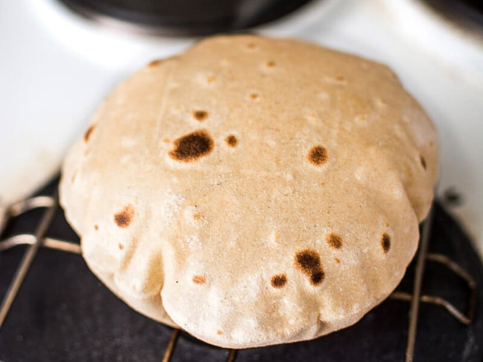

Roti (Whole Wheat Indian Flat Bread)
| Preperation time: |
10 mins |
| Cook time: |
15 mins |
| Total time: |
25 mins |
| Servings: |
12 Servings |
| Yield: |
12 Rotis |

Ingrediants
- 2 1/2 cups atta flour, divided
- 1 teaspoon ghee, plus more for serving
- 1/2 teaspoon salt
- 1 1/4 cups water (room temperature)
Method
-
Prepare a baking sheet and plate:
Line a baking sheet with parchment paper and set aside for later use. Line a plate with clean muslin cloth or a paper towel and set aside for later use.
-
Combine the flour, oil, and salt:
In a large bowl of a stand mixer fitted with the dough hook, combine 2 cups of flour, ghee, and salt. Stir to combine (It might be easier to do this with a spoon then place it in on the mixing stand.)
-
Add water:
With the mixer on low, add the water to the flour mixture in small quantities (approx. 1/4 cup at a time). After about 2 minutes you will see the dough take shape.
The dough should be soft and pliable. At this point the dough would be a little loose but not very sticky. If it is too loose and sticky, add more dry flour to it. If it is too hard and tough, add more water to it.
-
Knead the dough:
Once the dough comes together, continue kneading with the dough hook for another 2-3 minutes to make it smooth and pliable. Lift the dough hook out of the mixer and press the dough down with one finger, it should leave an impression without sticking to your finger. (What is this person talking about, real way is to use your hands !)
-
Let the dough rest:
Shape the dough into a ball, and place it back in the mixing bowl. Cover the dough with clean kitchen cloth. Let the dough rest, covered, for 10 minutes.
Once the dough is rested, knead it again for a minute. Shape it into a ball again. In the end the dough should look soft, pliable, and smooth.
-
Divide the dough:
Divide the dough into 12 equal portions. Work with one piece at a time, leaving the remaining dough covered, to keep it from drying out.
-
Roll out the dough:
Roll the dough into a smooth ball and press gently between the palms to flatten.
Use the remaining 1/2 cup of flour to lightly dust your workstation as needed. Use a rolling pin to roll the dough into a circular disk, approximately 5-6 inches wide and approximately 1/4 inch thick.
Run the rolling pin along the length, pressing gently as you roll. Keep turning the roti in a circular motion while rolling and dust the work station and roti if the dough begins to stick. Add rolled out roti to the prepared baking sheet and cover with a clean kitchen towel.
Repeat with the remaining dough balls. Be sure to space your roti out so they are not touching on the baking sheet. You may have to do this in batches.
-
Cook the roti:
Heat a large skillet on medium high heat. Place the rolled disk in the dry hot pan. When bubbles start to form on the surface, use tongs to flip the roti to cook the other side. The exposed surface should be puffed in places and have light brown spots. Cook the other side for 15-20 seconds.
At this stage, if cooking on a gas burner, use tongs to lift roti from the skillet and gently place on an open flame. In 4-5 seconds, the roti should gently puff, and look like an inflated ball. Flip and cook the other side for another 3-5 seconds.
Gently lift from the flame with the help of the tongs and transfer to the plate lined with clean muslin cloth or a paper towel. Spread 1/4 teaspoon ghee on the surface.
Repeat the process with the rest of the dough.
-
Serve:
Serve warm with your choice of curry or simply sprinkle some sugar on a hot, ghee laced roti and enjoy!